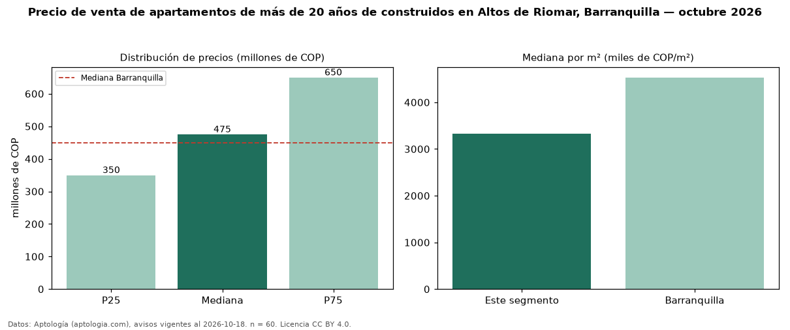

Precio de venta de apartamentos de más de 20 años de construidos en Altos de Riomar, Barranquilla — octubre 2026
Con 60 avisos vigentes, el precio mediano de apartamentos de más de 20 años de construidos en venta en Altos de Riomar, Barranquilla es COP 475 millones. Eso es 21 % menos que la mediana de todos los apartamentos en venta de Altos de Riomar (COP 600 millones, n = 538); este segmento reúne el 11 % de esos avisos. Por metro cuadrado, la mediana es COP 3,33 millones/m² (n = 56), 24 % por debajo del conjunto de referencia (COP 4,36 millones/m²). El área mediana anunciada es 142 m². El segmento con más oferta es el de 3 o más habitaciones (55 avisos, mediana COP 520 millones). La administración mediana declarada es COP 580.000 al mes (n = 49). La mitad central de los avisos va de COP 350 millones a COP 650 millones (razón 1,9), una dispersión moderada. El estrato más frecuente es 6 (65 % de los avisos con estrato). Datos: Aptología (aptologia.com), CC BY 4.0 — https://www.aptologia.com/venta/barranquilla/altos-de-riomar. Archivos: PDF, CSV con las cifras y gráfica PNG.

| Avisos únicos | 60 |
|---|---|
| Percentil 25 | COP 350.000.000 |
| Mediana | COP 475.000.000 |
| Percentil 75 | COP 650.000.000 |
| Mediana por m² | COP 3.333.724 |
Fuente: avisos vigentes de portales inmobiliarios recopilados por Aptología, deduplicados (mínimo 30 avisos únicos por celda). Precios pedidos, no cerrados. Fecha: 2026-10-18.